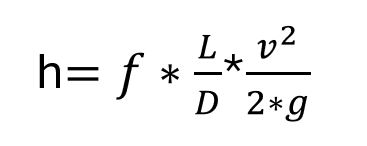
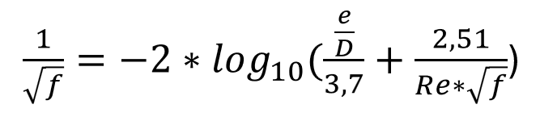
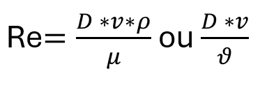
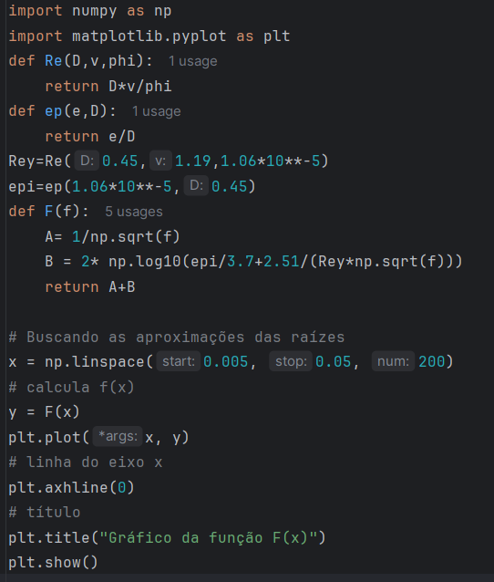
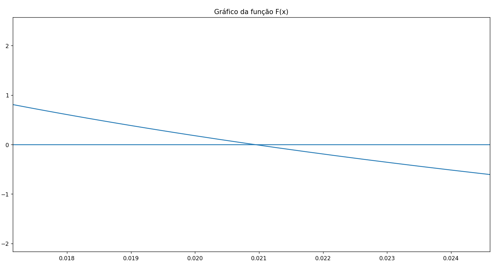
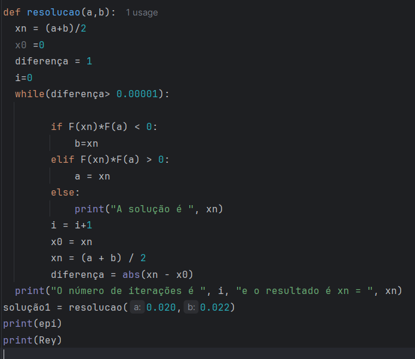

Esta publicação do Química Programada se propõe a calcular a perda de carga distribuída em uma tubulação. Para isso, é necessário determinar a forma como será obtido o fator de atrito. Decidimos utilizar a equação de Colebrook-White. Essa equação, como será demonstrado na seção 2, é uma equação implícita. Dessa forma, precisamos escolher um método numérico para sua resolução.
A equação de Colebrook-White foi desenvolvida em 1939 por C.F.Colebrook e C.M.White. Ela possibilita a obtenção de forma bastante precisa do fator de atrito, principalmente em regime turbulento.
O método numérico escolhido para resolução da equação do fator de atrito foi o método da bissecção. Esse método tem uma boa convergência e também a facilidade de que não é necessário obter a derivada da função, em casos em que essa é de difícil obtenção.
Para teste da eficácia do método, nós comparamos o resultado com a resolução de um exemplo do cáculo de carga em tubulações usando o método gráfico de Moody : o exemplo resolvido da página 176 do livro Mecanica de Fluidos de Franco Brunetti.
O cálculo da perda de carga distribuída em tubulações é realizado pela equação de Darcy-Weisbach. Ela foi desenvovida dos anos de 1940 por Henry Philibert Gaspard Darcy e aprimorada por Ludwig Weisbach. Ela é apresentada na Figura 1 . Nessa equação temos os parâmetros listados abaixo:

Na Figura 1, a velocidade de escoamento é obtida através da divisão da vazão de escoamento pela área da seção transversal do tubo. O fator de atrito é determinado através da equação de Colebrook-White, apresentada na Figura 2. Essa equação é bastante precisa e é uma equação implícita que deve ser calculada com algum método numérico. Nessa equação temos o parâmetro Re, que é o número de Reynolds. Esse é um número adimensional e sua equação é apresentado na Figura 3 . O número de Reynols pode ser calculado com a viscidade dinâmica e a massa específica ou com a viscosidade cinemática do fluido.


Para verificar se a resolução pelo método da bissecção irá convergir para resposta correta, vamos resolver um exemplo de cálculo da perda de carga que é apresentado página 177 do livro "Mecânica dos Fluidos" de Franco Brunneti usando o gráfico de Moody. Esse problema solicita que se determine a perda de carga de uma tubulação de aço de seção circular com os dados apresentados na lista abaixo:.
Para resolução da equação, primeramente precisamos plotar o gráfico da função de Colebrook-White, inspecionar o mesmo na região de proximidade da raiz para determinar dois valores próximo do cruzamento do eixo x. Na Figura 4 temos os comandos necessários para plotagem do gráfico. Na Figura 5, temos o gráfico na região de proximidade da raiz. Para que consigamos visualizar a raiz temos que plotar o gáfico num intervalo pequeno e excluir a proximidade o 0, onde a equação explode para valores muito próximos de 0. Nós escolhemos o intervalo 0,005 e 0,05. De acordo com o gráfico, podemos escolher os valores de fator de atrito para iniciar o método da bissecção como s a= 0,020 e b=0,022. Escolhemos que a diferença (ou erro absoluto, parâmetro para parar a iteração) é 0.00001. A resposta convergiu 0.02093 e o número de iterações foi 7. O número de Reynolds obtido foi de 50518. A resposta ficou bastante de acordo com o valor obtido pelo método gráfico de Moody no livro citado, de 0,021. O valor da perda de carga para esses dados, foi de 3,32 m.c.a./ km de tubo.


Na Figura 6, temos o algoritmo que foi usado para resolução da equação. Esse método é de fácil implementação, pois não requer que seja calculada a derivada da função objetivo.

O algoritmo usado para calcular o fator de atrito com o método da bissecção se demonstrou preciso, quando comparado com o exemplo citado acima que foi resolvido pelo método usando o gráfico de Moody. No caso da equação de Colebrook-White, esse método é mais fácil do que resolver pelo método de Newton-Raphson, pois não é necessário obter a derivada da função objetivo, o que pode ser bastante complicado às vezes.
Desenvolvimento : Química Programada